Candidate List 20260522 Previous Day Next Day Section 1: New Sources (age<1d) Cosmological Afterglow
Section 2: Old (1-5d) sources observed last night placeholder
Section 1: New Afterglow/FBOT Cands Last Night (2)
1. ZTF26aaxutnf (FBOT?) [Back to Top] [Share] [Trigger Swift] [Fritz ] [Lasair ]RA, Dec: 170.71718, -6.22192 11h22m52.12s, -6d-13m-18.90sGalactic (l, b): 266.96414, 50.36079 ext(g-r) = 0.041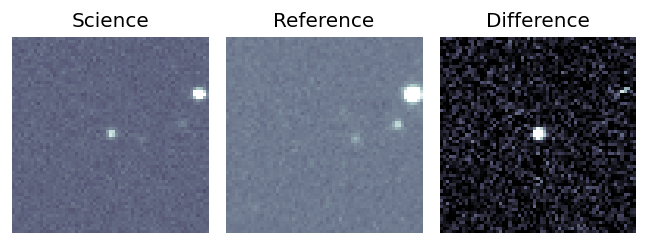
LegacySurvey: 1 sources in 3 arcsec Closest: d = 0.61 arcsec, 127.2 deg (east of north) photoz=0.57 (68% bounds 0.4, 0.78), type=REX peak abs mag = -24.31 (68% bounds -23.4, -25.14) 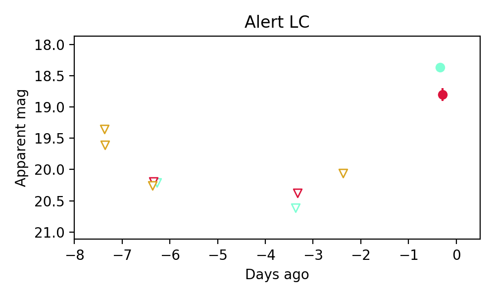
2. ZTF26aaxzujj (Afterglow?) [Back to Top] [Share] [Trigger Swift] [Fritz ] [Lasair ]RA, Dec: 347.40718, 11.13763 23h 9m37.72s, 11d 8m15.47sGalactic (l, b): 86.72037, -44.45854 ext(g-r) = 0.042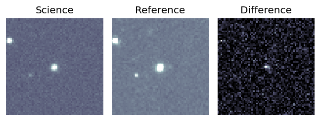
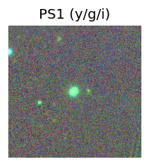
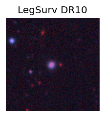
peak abs mag = -18.92 LegacySurvey: 1 sources in 3 arcsec Closest: d = 0.92 arcsec, 108.4 deg (east of north) photoz=0.18 (68% bounds 0.17, 0.2), type=REX peak abs mag = -18.85 (68% bounds -18.64, -19.02) 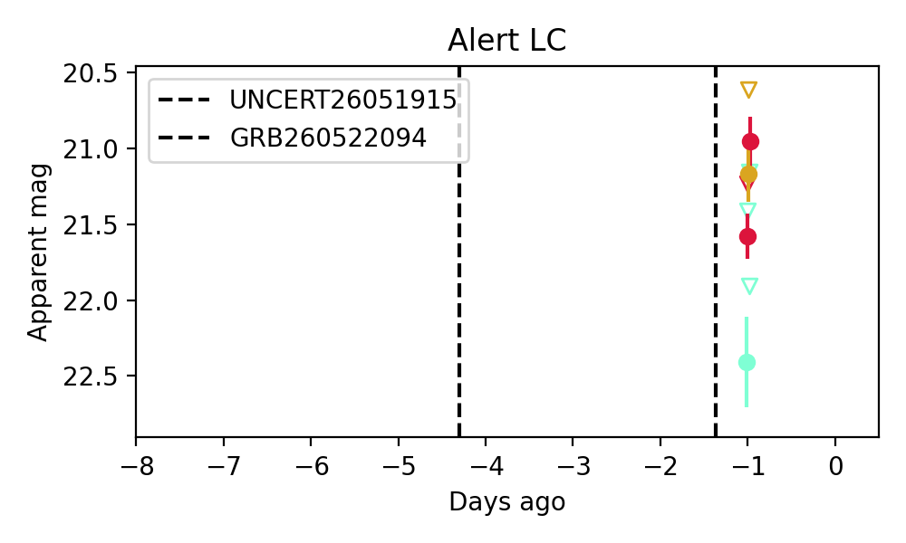
Consistent with synchrotron, g-r>0!
Section 2: Older Sources Observed Last Night (28)
0. ZTF26aawzvtx (Afterglow?FBOT?) [Back to Top] [Share] [Trigger Swift] [Fritz ] [Lasair ]RA, Dec: 213.42251, -3.2812 14h13m41.40s, -3d-16m-52.32sGalactic (l, b): 339.24321, 53.6894 ext(g-r) = 0.063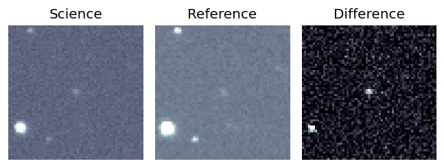
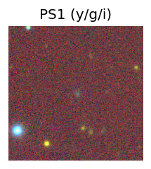
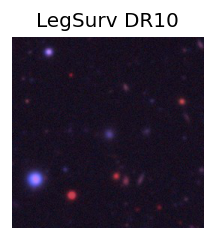
peak abs mag = -20.27 LegacySurvey: 1 sources in 3 arcsec Closest: d = 1.01 arcsec, 211.4 deg (east of north) photoz=0.17 (68% bounds 0.12, 0.2), type=REX peak abs mag = -20.48 (68% bounds -19.68, -20.9) 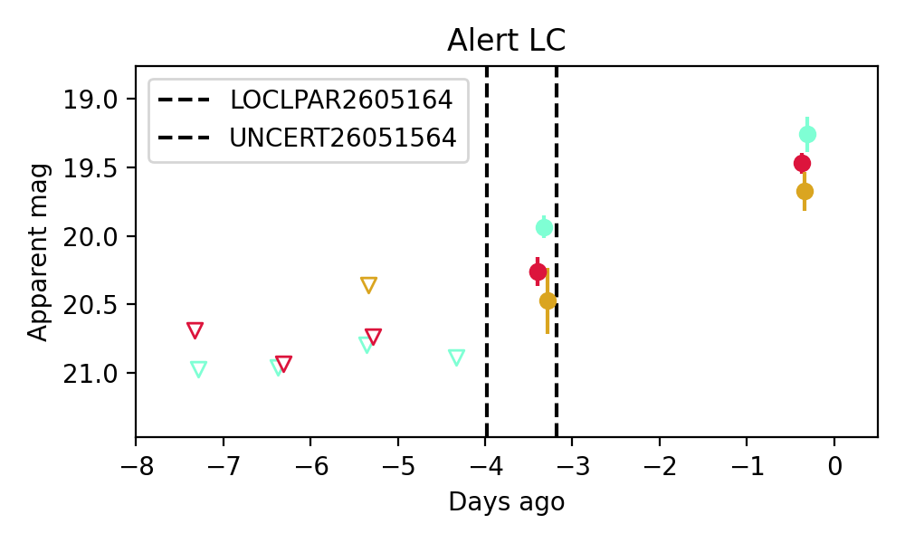
Consistent with synchrotron, g-r>0!
1. ZTF26aaxalgu (FBOT?) [Back to Top] [Share] [Trigger Swift] [Fritz ] [Lasair ]RA, Dec: 188.95212, -1.04706 12h35m48.51s, -1d-2m-49.40sGalactic (l, b): 294.70287, 61.57472 WARNING: 2.59 deg from ecliptic plane ext(g-r) = 0.026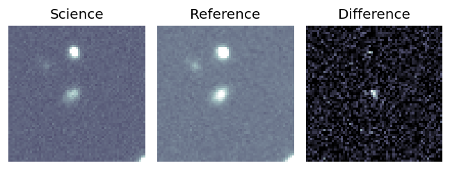
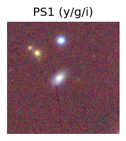
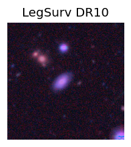
peak abs mag = -19.61 LegacySurvey: 1 sources in 3 arcsec Closest: d = 2.34 arcsec, 102.0 deg (east of north) photoz=0.1 (68% bounds 0.09, 0.12), type=SER peak abs mag = -19.12 (68% bounds -18.84, -19.43) 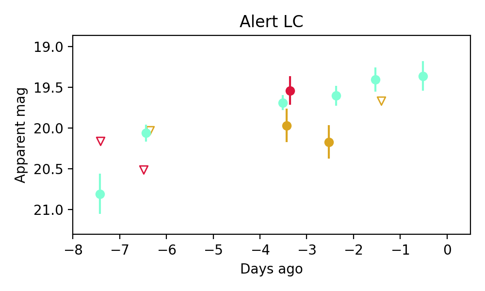
Consistent with synchrotron, g-r>0!
2. ZTF26aaxarkd (FBOT?) [Back to Top] [Share] [Trigger Swift] [Fritz ] [Lasair ]RA, Dec: 185.79853, 14.84247 12h23m11.65s, 14d50m32.90sGalactic (l, b): 273.36458, 76.06604 ext(g-r) = 0.036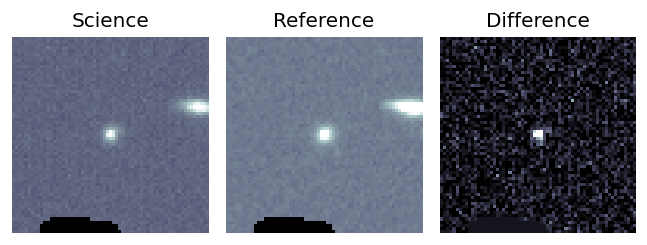
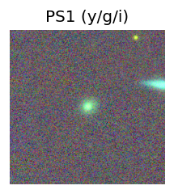
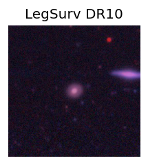
peak abs mag = -19.75 LegacySurvey: 1 sources in 3 arcsec Closest: d = 0.07 arcsec, 231.1 deg (east of north) photoz=0.19 (68% bounds 0.18, 0.19), type=SER peak abs mag = -19.72 (68% bounds -19.62, -19.82) 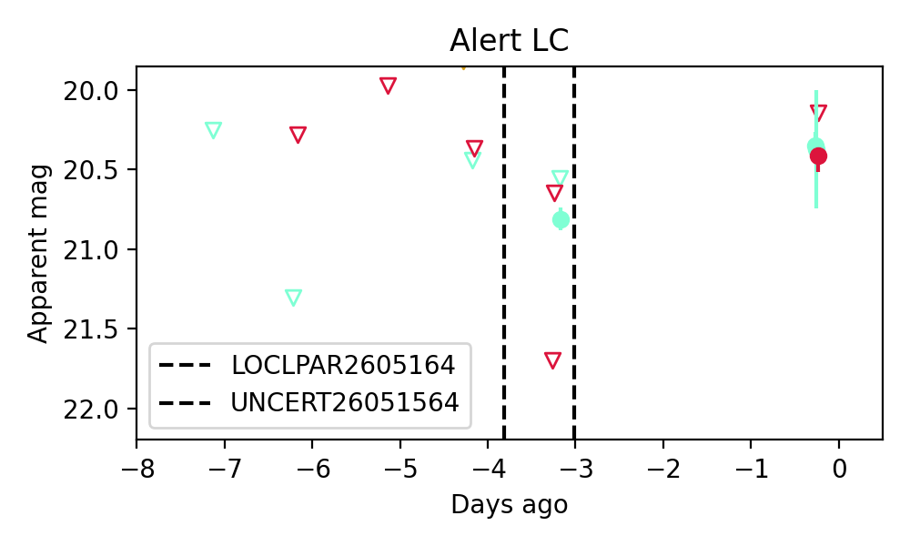
3. ZTF26aaxasvg (FBOT?) [Back to Top] [Share] [Trigger Swift] [Fritz ] [Lasair ]RA, Dec: 206.77515, 18.25421 13h47m6.04s, 18d15m15.14sGalactic (l, b): 1.14186, 74.41306 ext(g-r) = 0.025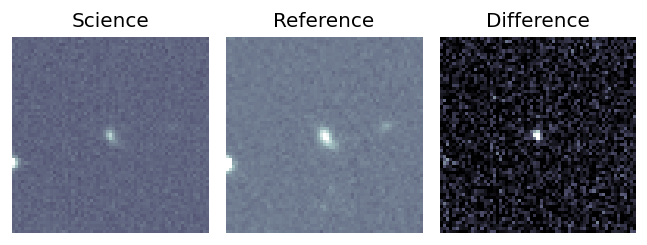
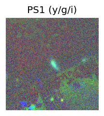
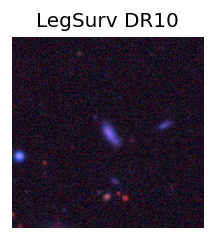
peak abs mag = -18.89 LegacySurvey: 1 sources in 3 arcsec Closest: d = 0.48 arcsec, 83.0 deg (east of north) photoz=0.38 (68% bounds 0.23, 0.72), type=EXP peak abs mag = -22.84 (68% bounds -21.6, -24.48) 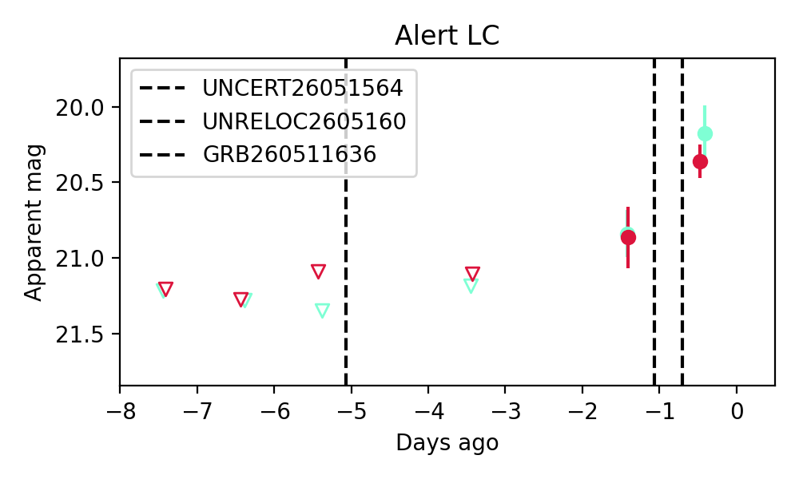
4. ZTF26aaxdwxv (Afterglow?) [Back to Top] [Share] [Trigger Swift] [Fritz ] [Lasair ]RA, Dec: 268.78435, 3.27144 17h55m8.24s, 3d16m17.18sGalactic (l, b): 29.39103, 14.01101 ext(g-r) = 0.247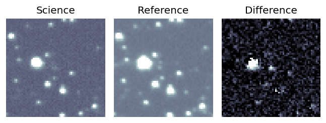
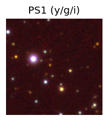
PS1: 1 source in 3 arcsec Closest: d = 2.83 arcsec photoz=1.02+/-0.14 peak abs mag = -25.02 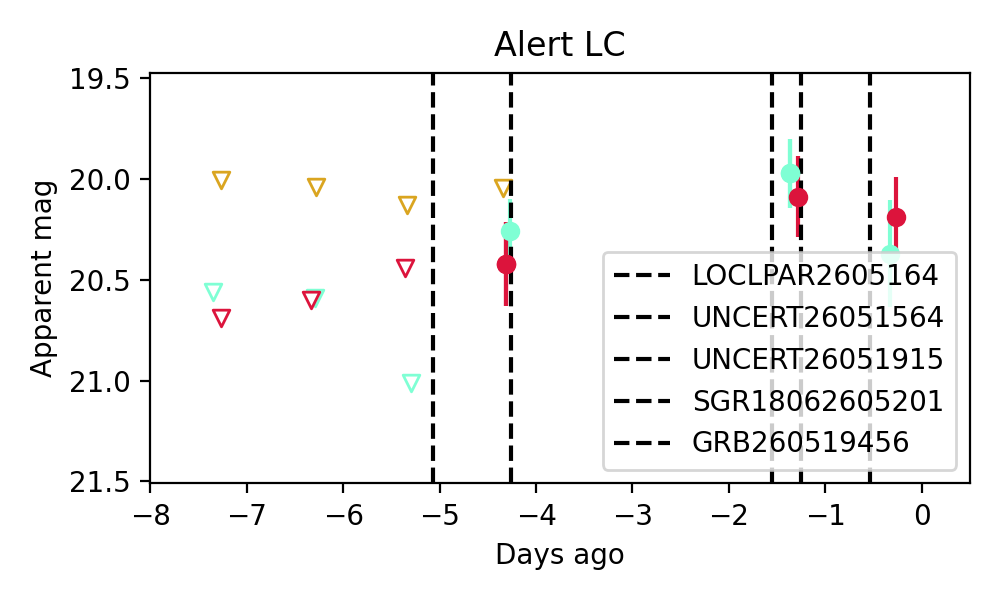
5. ZTF26aaxhhid (Afterglow?) [Back to Top] [Share] [Trigger Swift] [Fritz ] [Lasair ]RA, Dec: 222.16174, 18.27637 14h48m38.82s, 18d16m34.92sGalactic (l, b): 20.96736, 61.63752 ext(g-r) = 0.047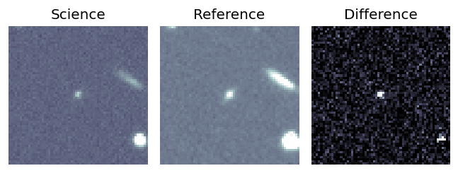
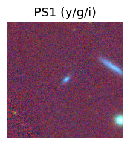
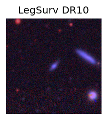
peak abs mag = -18.66 LegacySurvey: 1 sources in 3 arcsec Closest: d = 0.28 arcsec, 249.6 deg (east of north) photoz=0.06 (68% bounds 0.04, 0.11), type=SER peak abs mag = -18.29 (68% bounds -17.08, -19.67) 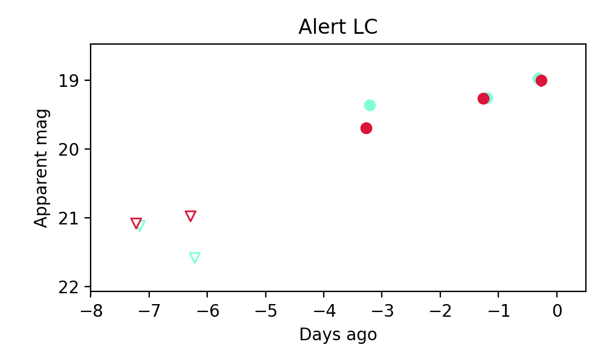
Consistent with synchrotron, g-r>0!
6. ZTF26aaxhvtq (Afterglow?) [Back to Top] [Share] [Trigger Swift] [Fritz ] [Lasair ]RA, Dec: 253.05842, -4.10199 16h52m14.02s, -4d-6m-7.15sGalactic (l, b): 14.42609, 24.1147 ext(g-r) = 0.232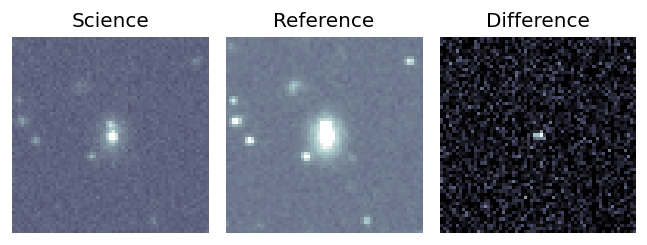
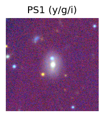
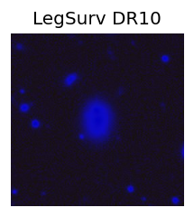
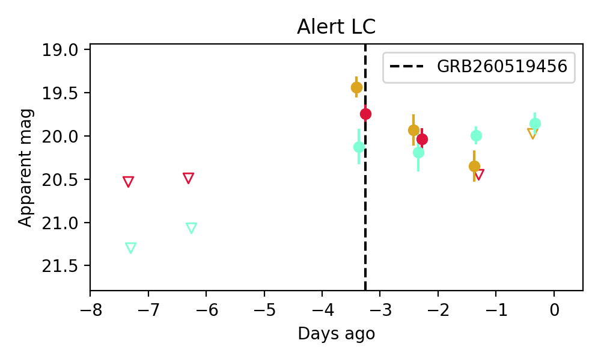
7. ZTF26aaxhwhr (Afterglow?) [Back to Top] [Share] [Trigger Swift] [Fritz ] [Lasair ]RA, Dec: 251.24251, -12.02058 16h44m58.20s, -12d-1m-14.07sGalactic (l, b): 6.21823, 21.1844 ext(g-r) = 0.555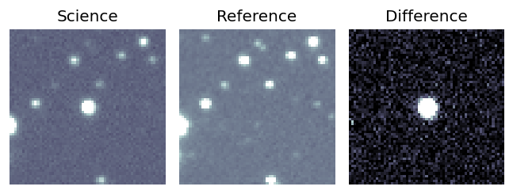
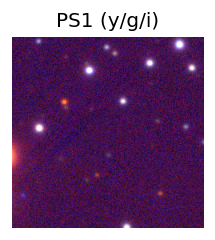
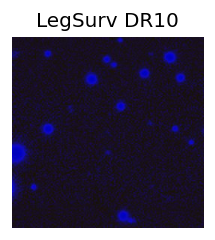
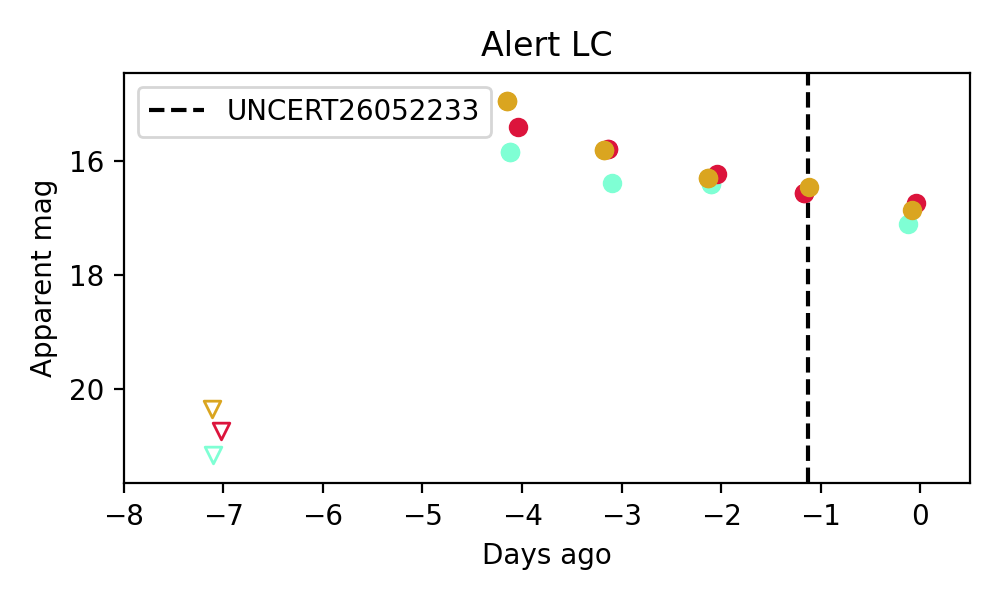
8. ZTF26aaxilhv (FBOT?) [Back to Top] [Share] [Trigger Swift] [Fritz ] [Lasair ]RA, Dec: 235.12691, 43.96268 15h40m30.46s, 43d57m45.66sGalactic (l, b): 70.68839, 52.2413 ext(g-r) = 0.018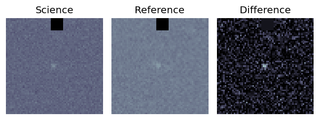
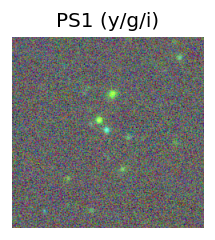
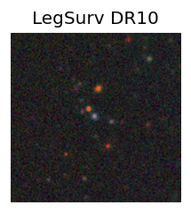
peak abs mag = -21.58 PS1: 1 source in 3 arcsec Closest: d = 0.61 arcsec photoz=0.55+/-0.24 peak abs mag = -22.42 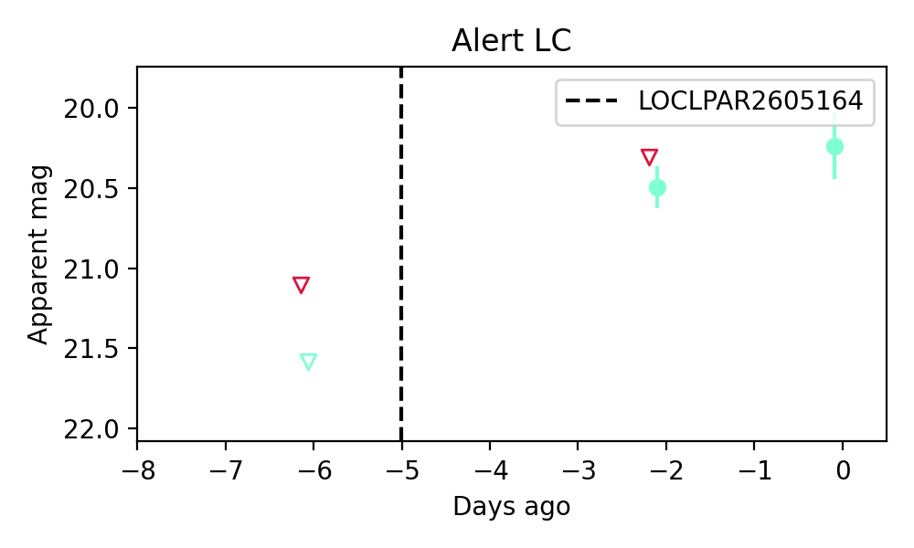
9. ZTF26aaxjsgp (Afterglow?) [Back to Top] [Share] [Trigger Swift] [Fritz ] [Lasair ]RA, Dec: 179.3401, 8.29739 11h57m21.62s, 8d17m50.60sGalactic (l, b): 266.22517, 67.23103 ext(g-r) = 0.02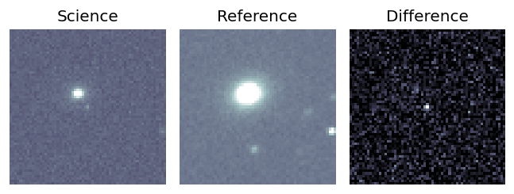
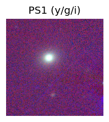
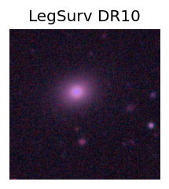
peak abs mag = -18.36 LegacySurvey: 1 sources in 3 arcsec Closest: d = 6.66 arcsec, 33.9 deg (east of north) photoz=0.07 (68% bounds 0.06, 0.07), type=SER peak abs mag = -18.28 (68% bounds -18.05, -18.46) 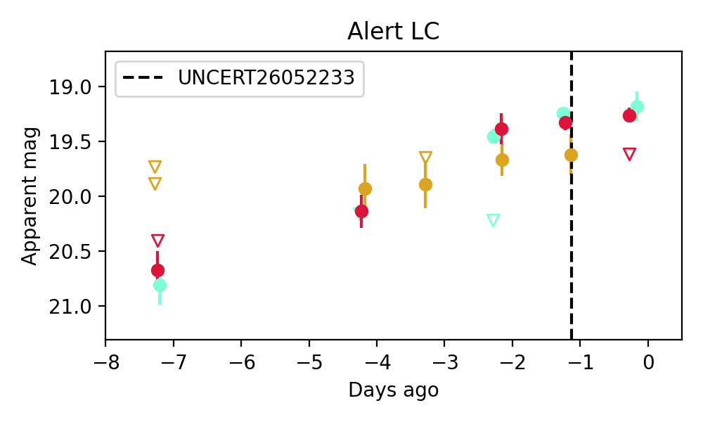
Consistent with synchrotron, g-r>0!
10. ZTF26aaxmqrj (Afterglow?) [Back to Top] [Share] [Trigger Swift] [Fritz ] [Lasair ]RA, Dec: 186.08019, 58.89094 12h24m19.25s, 58d53m27.37sGalactic (l, b): 129.52045, 57.88909 ext(g-r) = 0.014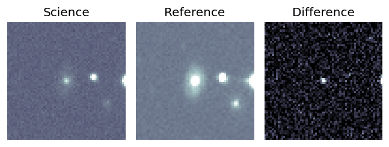
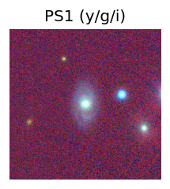
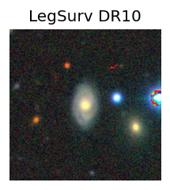
peak abs mag = -19.33 PS1: 1 source in 3 arcsec Closest: d = 0.28 arcsec photoz=0.10+/-0.01 peak abs mag = -18.84 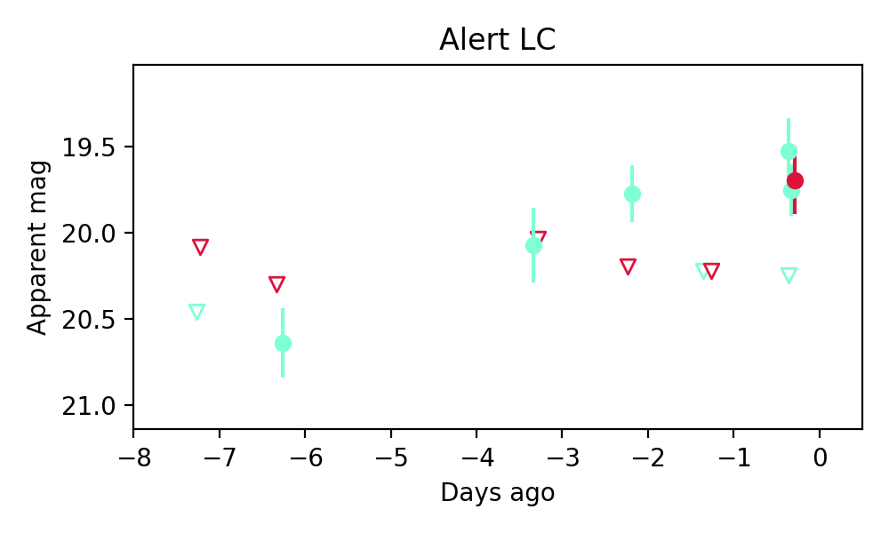
Consistent with synchrotron, g-r>0!
11. ZTF26aaxngcq (FBOT?) [Back to Top] [Share] [Trigger Swift] [Fritz ] [Lasair ]RA, Dec: 292.98071, 59.74565 19h31m55.37s, 59d44m44.33sGalactic (l, b): 91.4239, 18.3655 ext(g-r) = 0.077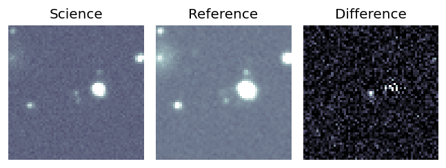
PS1: 1 source in 3 arcsec Closest: d = 0.45 arcsec photoz=0.33+/-0.34 peak abs mag = -21.74
12. ZTF26aaxnixn (Afterglow?) [Back to Top] [Share] [Trigger Swift] [Fritz ] [Lasair ]RA, Dec: 291.49256, -18.63277 19h25m58.21s, -18d-37m-57.97sGalactic (l, b): 19.74597, -15.79987 WARNING: 3.3 deg from ecliptic plane ext(g-r) = 0.098
13. ZTF26aaxnlmg (FBOT?) [Back to Top] [Share] [Trigger Swift] [Fritz ] [Lasair ]RA, Dec: 287.99664, -5.99152 19h11m59.19s, -5d-59m-29.48sGalactic (l, b): 29.91, -7.28764 ext(g-r) = 0.584PS1: 1 source in 3 arcsec Closest: d = 0.76 arcsec photoz=0.25+/-0.04 peak abs mag = -22.35
14. ZTF26aaxrewv (Afterglow?) [Back to Top] [Share] [Trigger Swift] [Fritz ] [Lasair ]RA, Dec: 264.75712, -12.64103 17h39m1.71s, -12d-38m-27.72sGalactic (l, b): 13.1808, 9.79024 ext(g-r) = 0.544PS1: 1 source in 3 arcsec Closest: d = 5.24 arcsec photoz=1.03+/-0.11 peak abs mag = -26.18
15. ZTF26aaxrulq (FBOT?) [Back to Top] [Share] [Trigger Swift] [Fritz ] [Lasair ]RA, Dec: 244.50763, 30.02366 16h18m1.83s, 30d 1m25.17sGalactic (l, b): 49.37125, 44.93338 ext(g-r) = 0.039peak abs mag = -19.16 LegacySurvey: 1 sources in 3 arcsec Closest: d = 0.55 arcsec, 350.7 deg (east of north) photoz=0.13 (68% bounds 0.13, 0.14), type=SER peak abs mag = -18.96 (68% bounds -18.87, -19.05)
16. ZTF26aaxtpkn (Afterglow?) [Back to Top] [Share] [Trigger Swift] [Fritz ] [Lasair ]RA, Dec: 294.64949, 8.16484 19h38m35.88s, 8d 9m53.43sGalactic (l, b): 45.64616, -6.61772 ext(g-r) = 0.39
17. ZTF26aaxtugs (Afterglow?FBOT?) [Back to Top] [Share] [Trigger Swift] [Fritz ] [Lasair ]RA, Dec: 282.85038, -5.64019 18h51m24.09s, -5d-38m-24.69sGalactic (l, b): 27.90474, -2.56047 ext(g-r) = 1.149PS1: 1 source in 3 arcsec Closest: d = 1.10 arcsec photoz=0.37+/-0.01 peak abs mag = -25.69
18. ZTF26aaxtwbd (Afterglow?) [Back to Top] [Share] [Trigger Swift] [Fritz ] [Lasair ]RA, Dec: 281.91124, 9.56371 18h47m38.70s, 9d33m49.34sGalactic (l, b): 41.03769, 5.17988 ext(g-r) = 0.623PS1: 1 source in 3 arcsec Closest: d = 0.22 arcsec photoz=0.05+/-0.01 peak abs mag = -18.27
19. ZTF26aaxuriy (FBOT?) [Back to Top] [Share] [Trigger Swift] [Fritz ] [Lasair ]RA, Dec: 185.31873, 13.14896 12h21m16.49s, 13d 8m56.27sGalactic (l, b): 274.67199, 74.34163 ext(g-r) = 0.048peak abs mag = -21.49 LegacySurvey: 1 sources in 3 arcsec Closest: d = 1.34 arcsec, 264.2 deg (east of north) photoz=0.11 (68% bounds 0.09, 0.14), type=EXP peak abs mag = -18.65 (68% bounds -18.02, -19.2)
20. ZTF26aaxuzyq (Afterglow?) [Back to Top] [Share] [Trigger Swift] [Fritz ] [Lasair ]RA, Dec: 217.56599, 8.80062 14h30m15.84s, 8d48m2.24sGalactic (l, b): 359.45027, 60.31535 ext(g-r) = 0.029peak abs mag = -17.91 LegacySurvey: 1 sources in 3 arcsec Closest: d = 3.35 arcsec, 112.8 deg (east of north) photoz=0.04 (68% bounds 0.03, 0.17), type=EXP peak abs mag = -16.29 (68% bounds -15.24, -19.49) Consistent with synchrotron, g-r>0!
21. ZTF26aaxxlan (Afterglow?) [Back to Top] [Share] [Trigger Swift] [Fritz ] [Lasair ]RA, Dec: 238.19175, -16.36883 15h52m46.02s, -16d-22m-7.80sGalactic (l, b): 353.63873, 28.15067 WARNING: 3.77 deg from ecliptic plane ext(g-r) = 0.236peak abs mag = -24.24 LegacySurvey: 1 sources in 3 arcsec Closest: d = 1.76 arcsec, 8.5 deg (east of north) photoz=0.56 (68% bounds 0.47, 0.65), type=REX peak abs mag = -24.22 (68% bounds -23.75, -24.62)
22. ZTF26aaxxrae (FBOT?) [Back to Top] [Share] [Trigger Swift] [Fritz ] [Lasair ]RA, Dec: 241.72969, 0.99174 16h 6m55.13s, 0d59m30.25sGalactic (l, b): 12.23818, 36.38508 ext(g-r) = 0.176LegacySurvey: 1 sources in 3 arcsec Closest: d = 0.37 arcsec, 84.5 deg (east of north) photoz=0.96 (68% bounds 0.73, 1.16), type=REX peak abs mag = -24.51 (68% bounds -23.76, -25.01)
23. ZTF26aaxxvfx (FBOT?) [Back to Top] [Share] [Trigger Swift] [Fritz ] [Lasair ]RA, Dec: 245.70344, -18.32868 16h22m48.83s, -18d-19m-43.24sGalactic (l, b): 357.34871, 21.52328 WARNING: 3.19 deg from ecliptic plane ext(g-r) = 0.458LegacySurvey: 1 sources in 3 arcsec Closest: d = 3.77 arcsec, 197.6 deg (east of north) photoz=0.11 (68% bounds 0.01, 0.29), type=PSF peak abs mag = -19.36 (68% bounds -14.58, -21.67)
24. ZTF26aaxzhwk (Afterglow?) [Back to Top] [Share] [Trigger Swift] [Fritz ] [Lasair ]RA, Dec: 280.95941, 48.74436 18h43m50.26s, 48d44m39.68sGalactic (l, b): 77.93383, 21.2388 ext(g-r) = 0.07PS1: 1 source in 3 arcsec Closest: d = 3.85 arcsec photoz=0.57+/-0.11 peak abs mag = -23.09 Consistent with synchrotron, g-r>0!
25. ZTF26aaxzrce (Afterglow?) [Back to Top] [Share] [Trigger Swift] [Fritz ] [Lasair ]RA, Dec: 347.70053, 9.38268 23h10m48.13s, 9d22m57.64sGalactic (l, b): 85.71696, -46.09094 ext(g-r) = 0.052peak abs mag = -22.22 LegacySurvey: 1 sources in 3 arcsec Closest: d = 0.20 arcsec, 165.0 deg (east of north) photoz=1.14 (68% bounds 1.03, 1.38), type=PSF peak abs mag = -24.39 (68% bounds -24.12, -24.89) Consistent with synchrotron, g-r>0!
26. ZTF26aaxzrwv (Afterglow?) [Back to Top] [Share] [Trigger Swift] [Fritz ] [Lasair ]RA, Dec: 346.86102, 10.80173 23h 7m26.65s, 10d48m6.24sGalactic (l, b): 85.83405, -44.45081 ext(g-r) = 0.059LegacySurvey: 1 sources in 3 arcsec Closest: d = 0.37 arcsec, 124.4 deg (east of north) photoz=2.26 (68% bounds 1.92, 2.5), type=PSF peak abs mag = -25.56 (68% bounds -25.13, -25.83) Consistent with synchrotron, g-r>0!
27. ZTF26aaxzssn (Afterglow?) [Back to Top] [Share] [Trigger Swift] [Fritz ] [Lasair ]RA, Dec: 345.153, 4.56062 23h 0m36.72s, 4d33m38.23sGalactic (l, b): 78.52644, -48.52036 ext(g-r) = 0.077peak abs mag = -22.62 LegacySurvey: 1 sources in 3 arcsec Closest: d = 0.12 arcsec, 161.4 deg (east of north) photoz=0.88 (68% bounds 0.77, 0.95), type=REX peak abs mag = -23.2 (68% bounds -22.87, -23.41) Consistent with synchrotron, g-r>0!